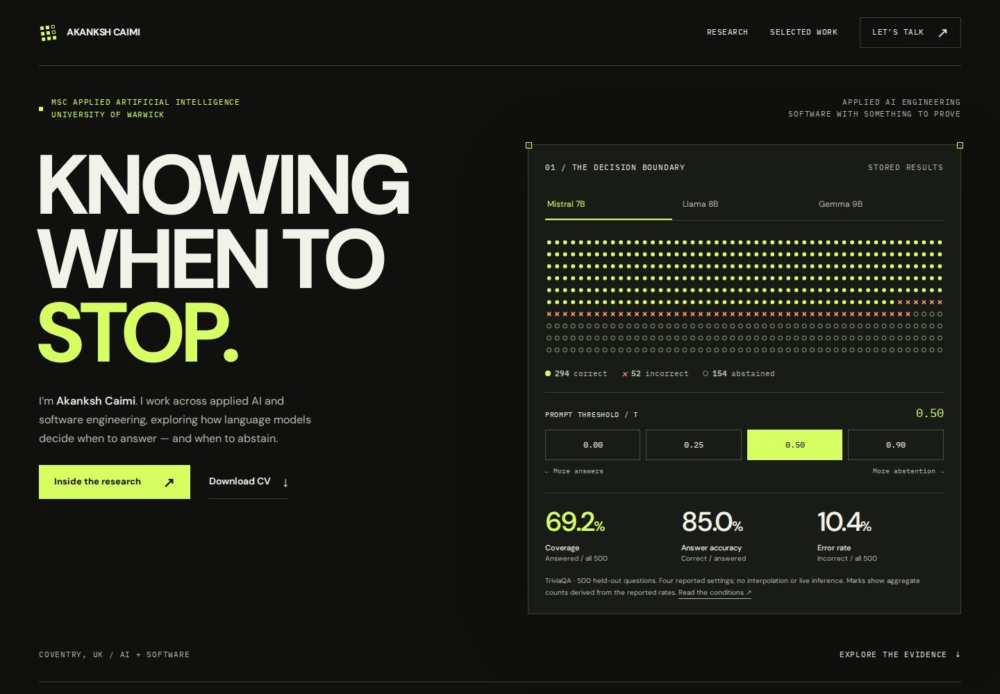
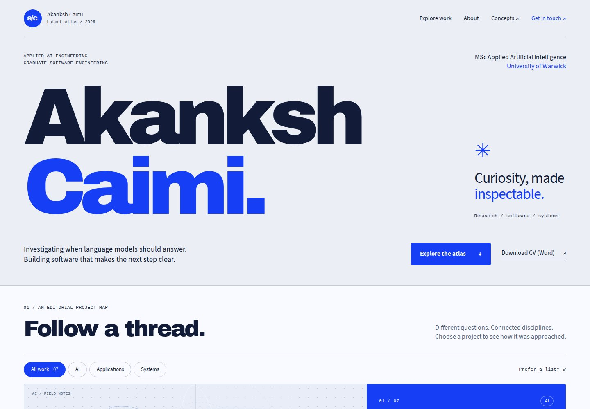
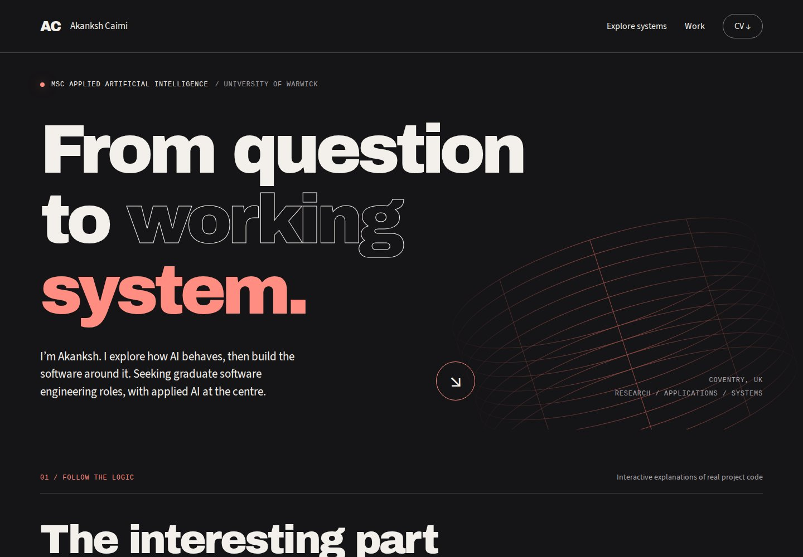

01 / ThresholdRecommended

The research instrument.
Change a model’s threshold. Watch the cost of fewer wrong answers emerge through real, reported experiment data.
Enter Threshold ↗One body of work. Three distinct ways to explore the questions, decisions and code behind it.
Interactive portfolio concepts
Change a model’s threshold. Watch the cost of fewer wrong answers emerge through real, reported experiment data.
Enter Threshold ↗
Move between AI, applications and systems in a luminous project atlas, then open the evidence behind each build.
Enter Latent Atlas ↗
Trace an LLM decision, a booking request or a processor instruction through the software that makes it work.
Enter Signal Path ↗The MSc and applied AI research lead, supported by commercial experience and practical software projects. A two-page, single-column Word document with real text, native bullets and reusable styles.
Selected CV design: Kiln — cream and rust. Editable Figma options: Ion / Kiln.
Concept review: interactions explain documented projects and saved research results. They do not run live models. Source links and contribution details are available inside each concept.